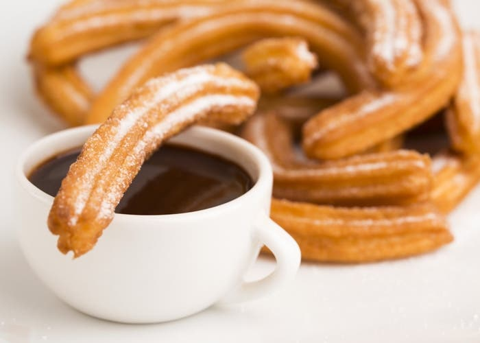

Top 1: Panqueques Americanos

Ingredientes
- 2 tazas de harina
- 2 ½ cucharaditas de polvo para hornear
- 3 cucharadas de azúcar
- ½ cucharadita de sal
- 2 huevos
- 1 ½ tazas de leche
- 2 cucharadas de manteca derretida
Preparación
- Tamizamos la harina, el polvo de hornear, el azúcar y la sal.
- Por otro lado, batimos los huevos con la leche.
- Agregamos la mezcla de harina, batiendo con batidora eléctrica hasta que se integren todos
los
ingredientes.
- Añadimos la manteca derretida y continuamos batiendo.
- Engrasamos una sartén y llevamos a fuego suave.
- Vertemos un ¼ taza de la mezcla, expandiéndola por toda la base del sartén.
- Cocinamos hasta que comience a burbujear y se dore.
- Volteamos el panqueque y cocinamos por el otro lado hasta que también se dore.
- Repetimos este procedimiento hasta terminar con toda la mezcla de Panqueques Americanos.
Receta de Churros Faciles y Rapidos

Ingredientes
- 500g de harina
- 650ml de agua
- 6g de sal
- 3 cucharadas de aceite
- Aceite de girasol o maíz
- Azúcar c/n
Preparación
- Tamiza la harina y coloca en un bol.
- Coloca el agua en una olla junto con las tres cucharadas de aceite y la sal, y mezcla muy
bien
con unas varillas metálicas.
- Lleva al fuego y cuando el agua esté hirviendo, echa la harina y mientras se cocina remueve
con
una cuchara de madera.
- Cuando veas que se va formando una masa, aparta del fuego y continúa mezclando con la
cuchara.
- Una vez que esté a una temperatura agradable, comienza amasar durante cinco minutos.
- Coloca la masa en una churrera y corta a la medida que consideres.
- Coloca abundante aceite en una olla y lleva a fuego medio.
- Cuando el aceite este caliente, fríe los churros hasta que se doren.
- Retira los churros de la sartén u olla con ayuda de una espátula y apoya sobre una bandeja
con
servilletas de papel para retirar el exceso de aceite.
- Deja enfriar y espolvorea con azúcar.